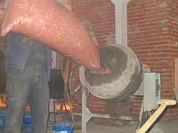
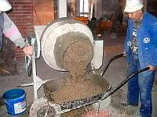
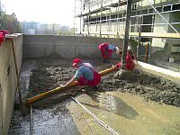
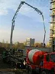
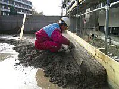
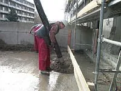

Ekostyrenbetón
EKOSTYREN je plnivo do betónu z polystyrénovej drte, ktoré významne zlepší jeho tepelnoizolačné vlastnosti. Je ľahko miešateľný s vodou, cementom a pieskom.
Ekostyrenbetón sa ľahko pripravuje ručne, v miešačke alebo domiešavači
Ekostyrenberón - osvedčená tepelná a zvuková izolácia Vašej stavby
Príklady použitia
Nenosná izolácia a izolačná výplň zvislých aj vodorovných konštrukcií
Dodatočné zateplenie zvislých stien
Spádová vrstva plochých nepochodzích striech
Vyrovnávacia a izolačná vrstva stropov a podláh
Spádová izolačná vrstva terás, balkónov a plochých striech
- pružný podklad ciest, chodníkov, tenisových dvorcov, a športových ploch, ukladaných priamo na prirodný terén
Izolácia vonkajších rozvodov vody a kanalizácie
Materiálový list plniva do polystyrenbetónu
Dávkovanie na 1 m3 a parametre nezhutneného betónu
| Zmes číslo: | 1 | 2 | 3 | 4 | 5 | |
| Objemová hmotnosť | (kg/m3) | 200 | 350 | 500 | 700 | 900 |
| Ekostyren | (litre) | 1285 | 1285 | 1200 | 1100 | 950 |
| Cement CEM I 32,5R | (kg) | 130 | 220 | 280 | 280 | 270 |
| Piesok 0-4 mm | (kg) | 30 | 40 | 100 | 330 | 510 |
| Voda | (litre) | 75 | 90 | 120 | 130 | 140 |
| Pevnosť v tlaku | (MPa) | 0,2 | 0,3 | 0,5 | 0,9 | 1,8 |
| Súčiniteľ tepelnej vodivosti | (W/mK) | 0,057 | 0,086 | 0,140 | 0,177 | 0,235 |
| Horľavosť | (stupeň) | B | B | B | A | A |
| Hygienická nezávadnosť | vhodné pre použitie v interiéroch | |||||
Orientačné dávkovanie na 200 litrov plniva ekostyrenu
| Zmes číslo: | 1 | 2 | 3 | 4 | 5 | |
| Objemová hmotnosť | (kg/m3) | 200 | 350 | 500 | 700 | 900 |
| Cement | (kg) | 20; | 35 | 45 | 50 | 55 |
| PIEsok 0 – 4 | (kg) | 6 | 7 | 17 | 60 | 110 |
| Voda | (litre) | 12 | 14 | 20 | 25 | 30 |
Odporúčaný postup prípravy ekostyrenbetónu
1. Naliať predpísané množstvo vody, pridať cement a rozmiešať na cementové mlieko.
2. Pridať piesok a znovu premiešať.
3. Postupne pridať ekostyren a premiešať, pokiaľ nevznikne polosuchá homogénna zmes. Pokiaľ je zmes suchá a nesúdržná, nepatrne doplniť vodou.
Ekostyrenbetón sa dá vyrobiť priamo v domiešavači pridaním všetkých prísad v uvedenom poradí.
Balenie
V PE vreciach po 200 litroch ±5% voľne sypaných.






Výhody
- 12x ľahší ako betón (200 - 900 kg/m3) – pri rekonštrukcii nie je potrebné zosilňovať základy
Rýchlo tuhne (ďalšia vrstva o 24 hod.)
Až 30x lepšie tepelnoizolačné vlastnosti ako betón
Pri hrúbke 7 cm zvukový útlm 53 dB (500 kg/m3)
Dobré mechanické vlastnosti pri malej objemovej hmotnosti
Nehorľavosť od 700 kg/m3, neľahko horľavý do 700 kg/m3
Vysoká elasticita, pohlcuje rázy, je netrieštivý
Odolnosť voči hlodavcom a plesniam
- výrobok je zdravotne nezávadný, vhodný do interiéru (protokol STM02286 vydaôa Slovenská zdravotnícka univerzita, Vedeckovyskumná základňa SZU, odd.radiačnej hygieny, Bratislava)